Разрешение на запуск
В модели до решения директора создаётся только его персональная задача. Общий чат и задачи маршрута появляются после разрешения.
Аспекта / Кейс портфолио
Проектирование процесса согласования: роли, маршруты, версии документов и контроль решений в контуре Битрикс24.
Процесс объединяет инициатора, юриста, бухгалтера, руководителей и генерального директора. Требовалось описать единые правила: кто принимает решение, какая версия документа актуальна и что происходит после замечаний.
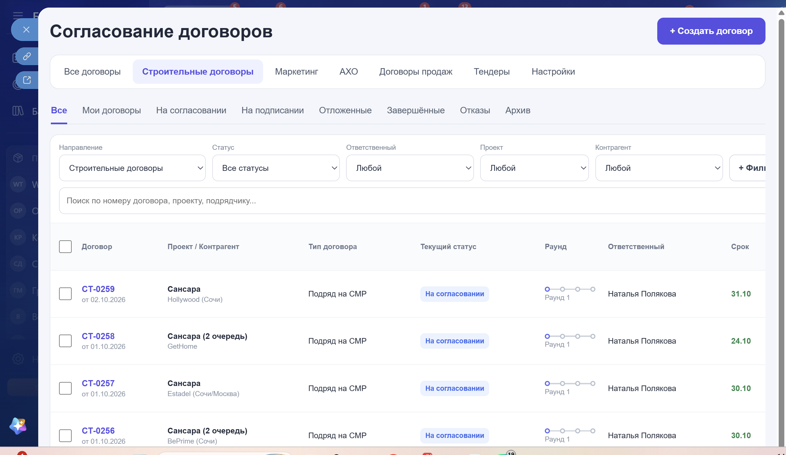
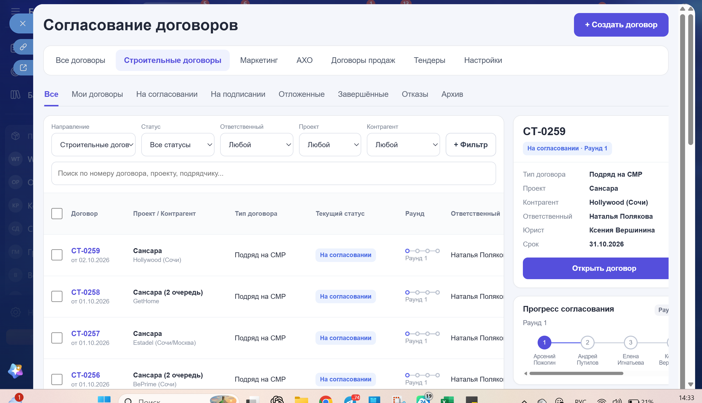
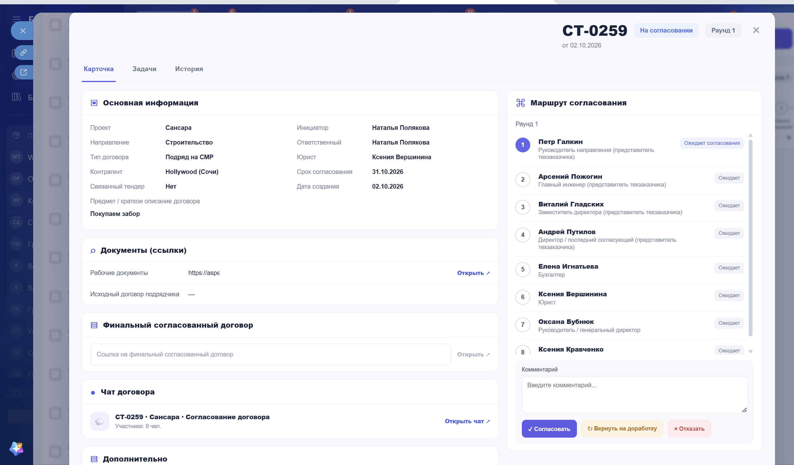
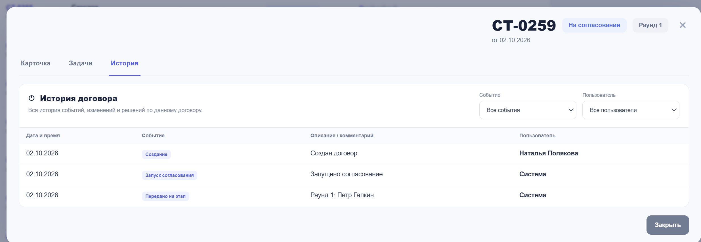
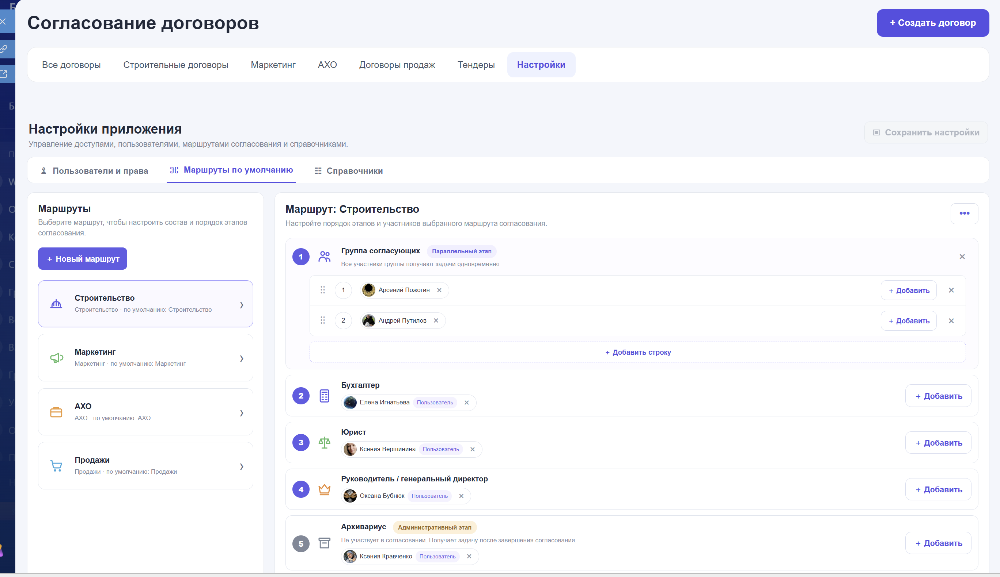
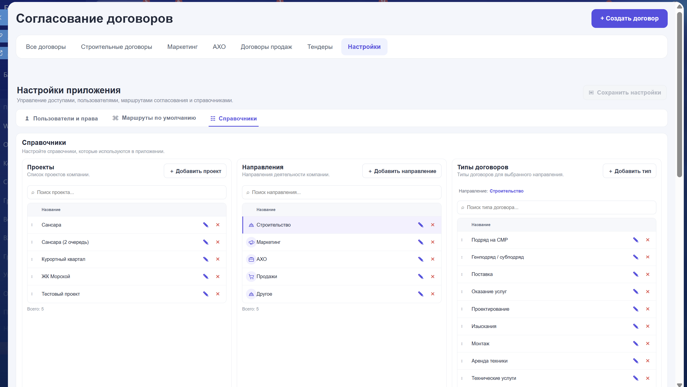
В модели до решения директора создаётся только его персональная задача. Общий чат и задачи маршрута появляются после разрешения.
Для договора сохраняется состав участников и этапов. Изменение общего шаблона не должно менять уже запущенный процесс.
Согласование фиксируется действием в карточке. Закрытие задачи само по себе не означает одобрение документа.
После изменений со стороны контрагента предусмотрен новый раунд с обязательными проверками и новой версией документа.
В центре проекта — правила: кто может действовать, какое решение считается принятым и как процесс продолжается после изменений.
Основной маршрут по требованиям проекта: разрешение на запуск, подготовка, согласование, обмен с контрагентом и архивирование.
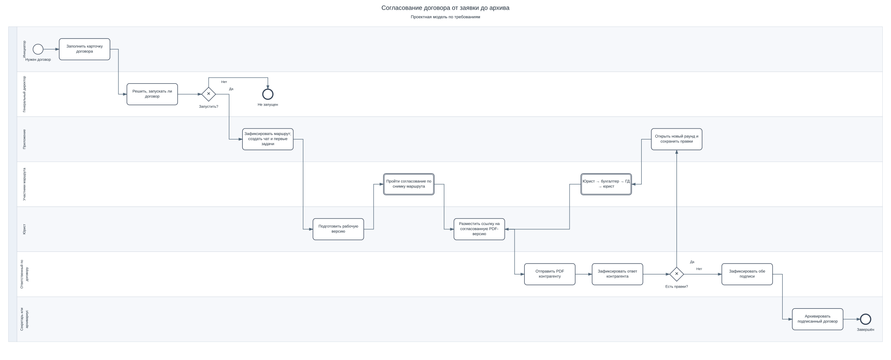
Отдельная модель повторной проверки и возврата на доработку.
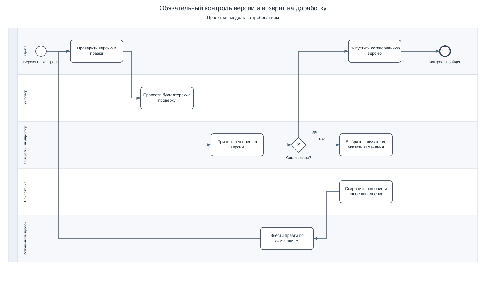
Модель одновременных проверок. Повтор всей группы при замечаниях — проработанный вариант маршрута.
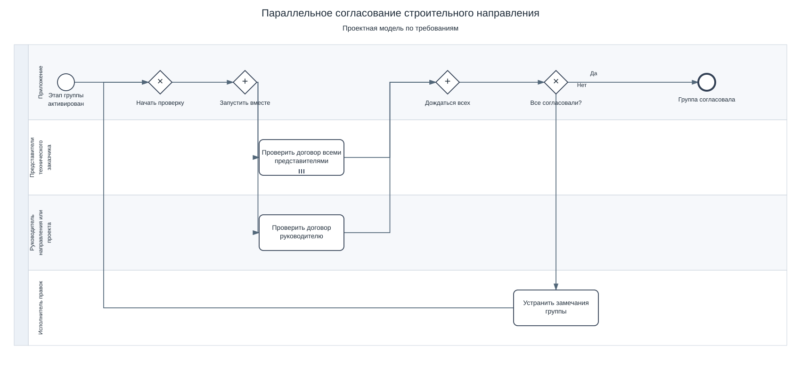
Основные связи из SQL-схемы проекта. Диаграмма показывает ключевую часть структуры данных.
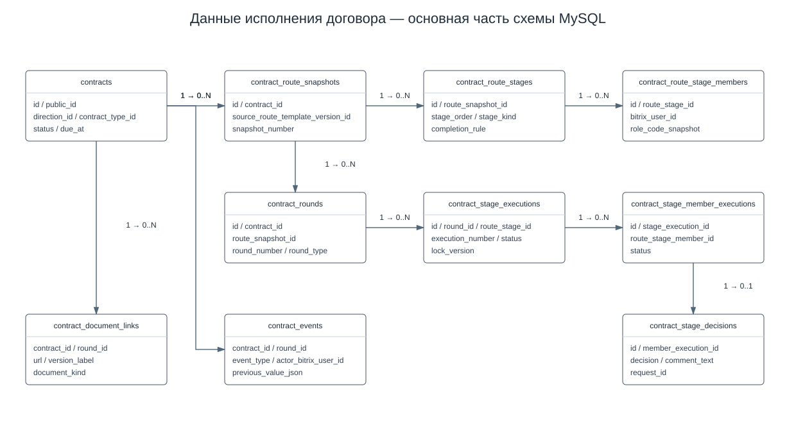
Проектная схема взаимодействия интерфейса, сервера, базы данных и REST Битрикс24.
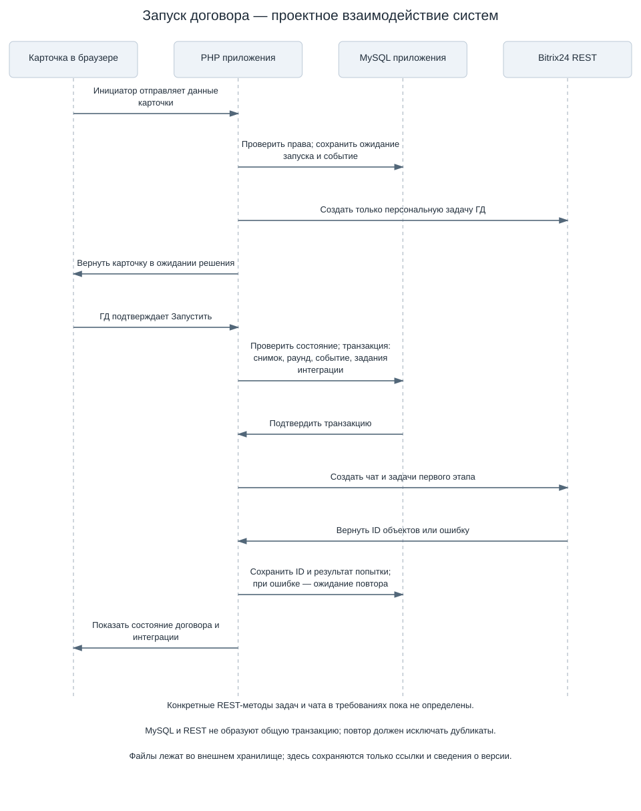
Роль, участник и ожидаемое действие определены для каждого этапа.
Маршрут, раунды и версии документов позволяют восстановить ход согласования.
Возврат на доработку и повторный контроль описаны как часть процесса.